Zero-downtime schema evolution using separate databases, logical replication, and the expand/contract pattern.
The expand/contract pattern (also called parallel change) was articulated by Pete Hodgson on martinfowler.com. The core idea: first expand the system so it supports both old and new simultaneously, then contract by removing the old once everything has migrated.
Applied to databases, this means schema changes are split into two releases: an additive expand migration (new columns, tables, indexes — no drops or renames) and a later contract migration that removes deprecated structures after cutover.
Reference: Hodgson, Pete. “Parallel Change”. martinfowler.com, 2014. https://martinfowler.com/bliki/ParallelChange.html
The blue-green schemas approach (same DB, two schemas) works well for data swaps but doesn’t cover PostgreSQL version upgrades, zone failovers, or cross-provider migrations. Using separate database instances makes all of these routine:
The same pipeline handles all cases. Routine becomes boring, which is the goal.


| Phase | Action | Constraint |
|---|---|---|
| 1. Provision | Create green DB instance | Can be different PG version, zone, or provider |
| 2. Expand | Apply additive-only schema to green | No drops, no renames — replication requires schema compatibility |
| 3. Replicate | Start logical replication blue → green; wait for lag → 0 | PG 10+ for logical replication; PG 17+ for pg_createsubscriber |
| 4. Cutover | Flip feature flag / connection string to green | Design for idempotency around the switch point |
| 5. Contract | Stop replication; drop deprecated columns/tables on green | Only safe after replication is stopped and blue traffic is zero |
| 6. Teardown | Remove blue DB; green becomes next cycle’s blue | Keep blue as rollback target until confident |
PostgreSQL logical replication copies row-level changes from a publication on blue to a subscription on green. The expand migration must be applied to green before replication starts, since logical replication transfers data, not DDL.
-- On blue
CREATE PUBLICATION blue_pub FOR ALL TABLES;
-- On green (after expand migration)
CREATE SUBSCRIPTION blue_to_green
CONNECTION 'host=blue-db dbname=mydb ...'
PUBLICATION blue_pub;pg_createsubscriber converts a physical standby into a logical replica,
creating publications and subscriptions without copying initial table data.
-- After cutover
DROP SUBSCRIPTION blue_to_green; -- on green
DROP PUBLICATION blue_pub; -- on blueSeveral Go tools can manage the expand and contract migrations. The key criterion is whether the tool can enforce “expand only” (no destructive operations) during phase 2.
| Tool | Approach | Expand/Contract Fit |
|---|---|---|
| Atlas (ariga.io/atlas) | Declarative schema-as-code. Diffs desired state vs live DB, generates migration plan. Also supports versioned SQL files. | Best fit. atlas schema diff auto-generates expand migration. Migration linting catches destructive ops. Two schema directories (schema/ and schema-final/) formalise the expand/contract boundary. |
| golang-migrate/migrate | SQL up/down files. CLI + Go library. Supports io/fs embedding. |
Good. You structure expand and contract as separate migration pairs. No built-in lint for destructive ops. |
| pressly/goose | SQL files + Go-function migrations. CLI + library. v3 API. | Good. Go-function migrations useful for data backfills during expand. Same manual discipline as migrate. |
| dbmate | Language-agnostic CLI. Pure SQL migrations. | Adequate. Lightweight, no Go import needed. No lint or declarative diffing. |
Atlas is the strongest fit because:
schema/ (expand-safe target) and schema-final/ (clean final state) formalises the patternatlas migrate lint can enforce “no destructive ops” in the expand phaseschema/
schema.hcl # expand-safe target (additive only)
schema-final/
schema.hcl # clean final state (old stuff removed)
scripts/
create_publication.sql
create_subscription.sql
wait_for_sync.shCI can lint schema/ to ensure it contains no destructive operations.
# Preview expand migration
atlas schema diff \
--from "$BLUE_DB_URL" \
--to file://schema \
--dev-url "docker://postgres"
# Apply expand to green
atlas schema apply \
--url "$GREEN_DB_URL" \
--to file://schema \
--dev-url "docker://postgres"
# Apply contract after cutover
atlas schema apply \
--url "$GREEN_DB_URL" \
--to file://schema-final \
--dev-url "docker://postgres"# Taskfile.yml (excerpt)
tasks:
green:migrate-expand:
desc: Apply additive-only schema to green
cmds:
- atlas schema apply
--url "{{.GREEN_DB_URL}}"
--to file://schema
--dev-url "docker://postgres"
green:replicate:
desc: Start logical replication blue→green
cmds:
- psql "{{.BLUE_DB_URL}}" -f scripts/create_publication.sql
- psql "{{.GREEN_DB_URL}}" -f scripts/create_subscription.sql
green:wait-sync:
desc: Wait for replication lag to reach zero
cmds:
- scripts/wait_for_sync.sh "{{.GREEN_DB_URL}}"
green:cutover:
desc: Switch feature flag to green
cmds:
- echo "flip feature flag / update connection string"
green:contract:
desc: Apply contract migrations (drop old columns/tables)
cmds:
- psql "{{.GREEN_DB_URL}}" -c "DROP SUBSCRIPTION blue_to_green;"
- psql "{{.BLUE_DB_URL}}" -c "DROP PUBLICATION blue_pub;"
- atlas schema apply
--url "{{.GREEN_DB_URL}}"
--to file://schema-final
--dev-url "docker://postgres"
deploy:
desc: Full blue→green cutover
cmds:
- task: green:migrate-expand
- task: green:replicate
- task: green:wait-sync
- task: green:cutover
- task: green:contract| Blue-Green Schemas (same DB) | Expand/Contract (separate DBs) | |
|---|---|---|
| Scope | Data swaps, ETL refresh | Schema evolution, PG upgrades, zone failover |
| Mechanism | search_path switch |
Connection string switch + logical replication |
| PG version change | Not possible | Native — green runs new version |
| Cross-zone/provider | No | Yes |
| Rollback speed | Sub-second (ALTER DATABASE) |
Seconds (flip connection string back) |
| Complexity | Low | Medium — replication setup and monitoring |
| Best for | Periodic full data rebuilds | Routine release-cycle schema changes |
| Concern | Notes |
|---|---|
| Logical replication limits | DDL not replicated; sequences not synced; large objects not supported. All tables must have a replica identity (primary key or REPLICA IDENTITY FULL). |
| Expand discipline | Expand migrations must be additive only. Any drop or rename breaks replication or loses data. Use Atlas linting to enforce. |
| Replication lag | High-write workloads may take time to sync. Monitor pg_stat_subscription and wait for lag → 0 before cutover. |
| Sequence continuity | Sequences are not replicated. If using sequences (not UUIDs), set green sequences to start above blue’s current max before cutover. |
| In-flight transactions | Transactions open at cutover may fail. Design for retry/idempotency at the application level. |
pg_createsubscriber.
postgresql.org/docs/17/app-pgcreatesubscriber.html